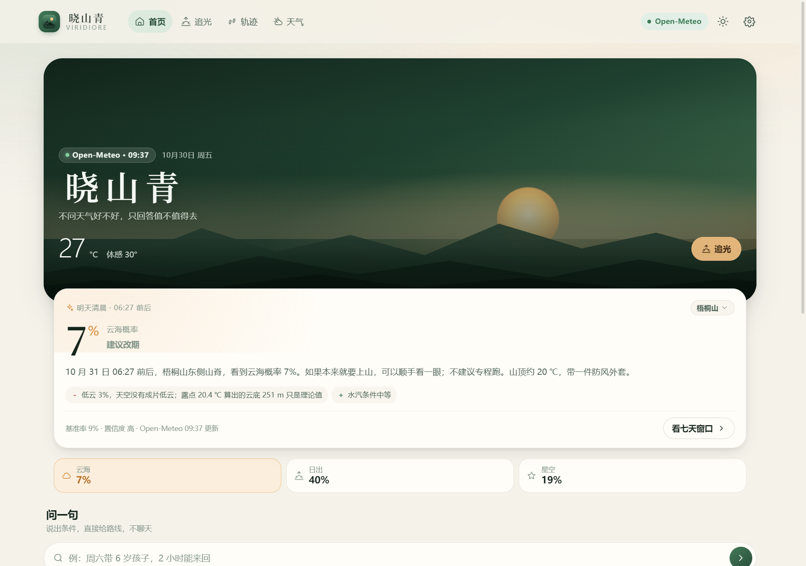
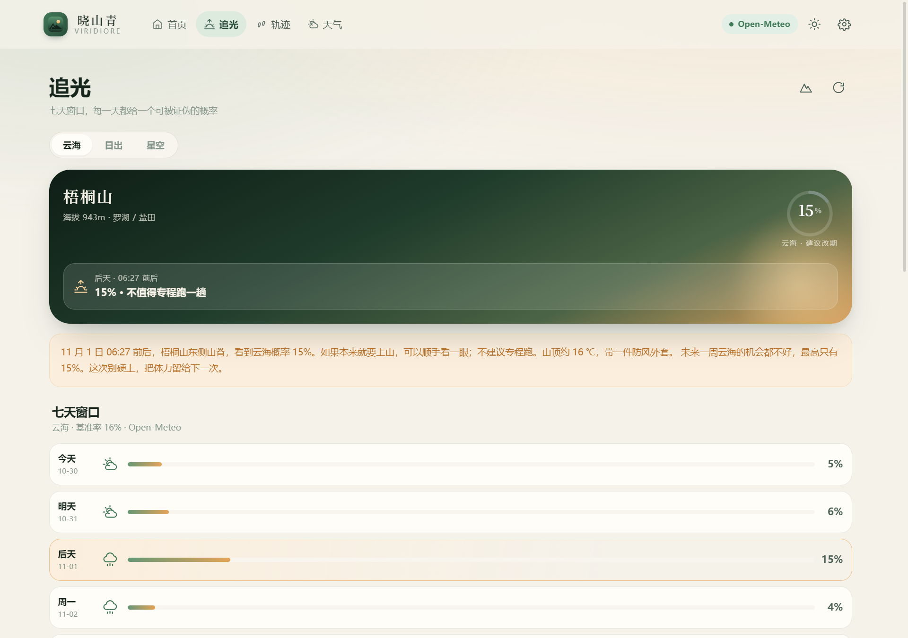
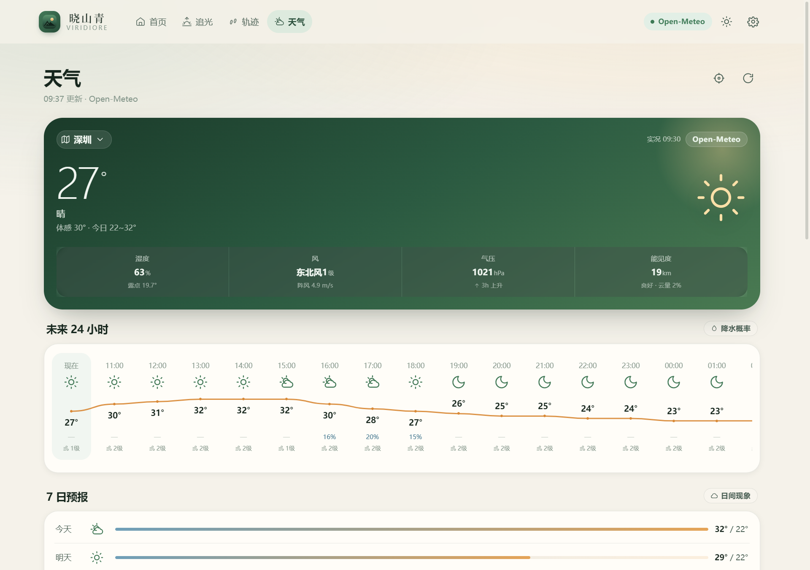
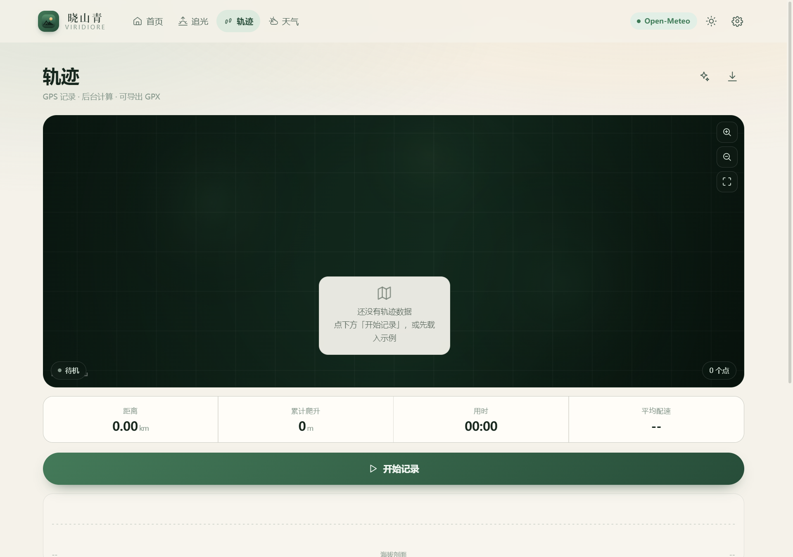
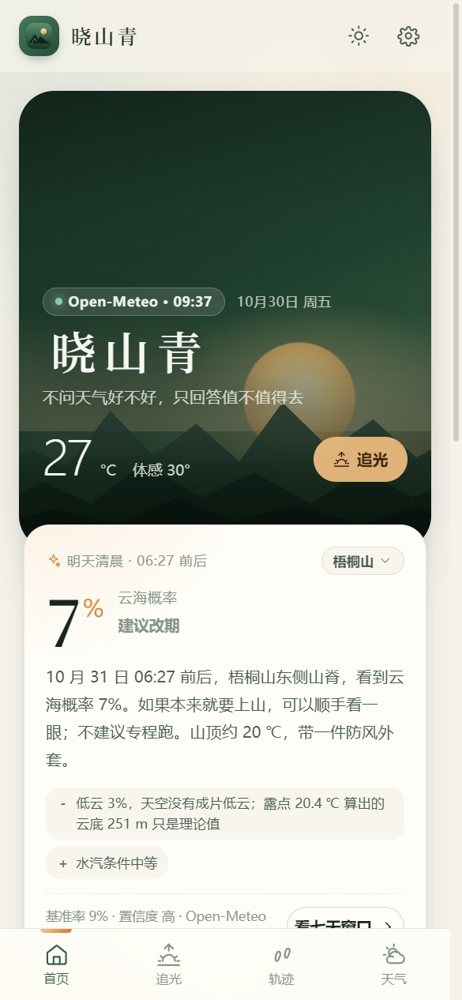
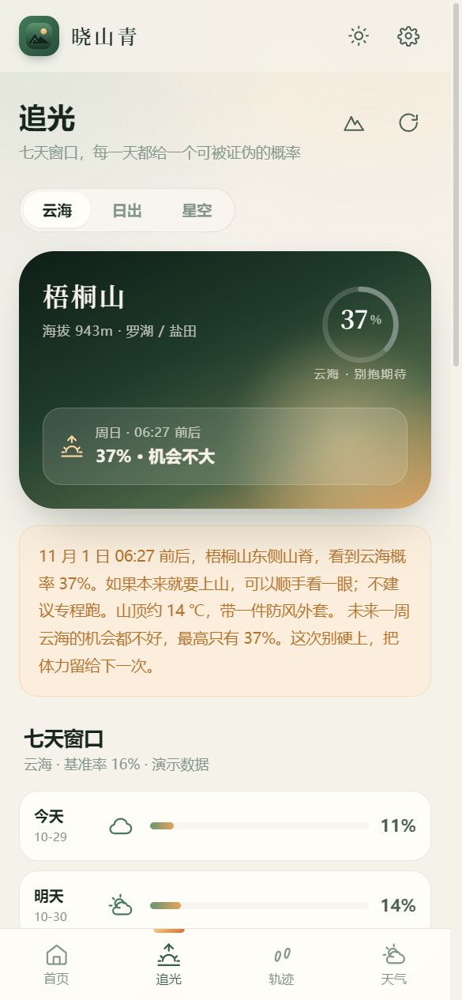
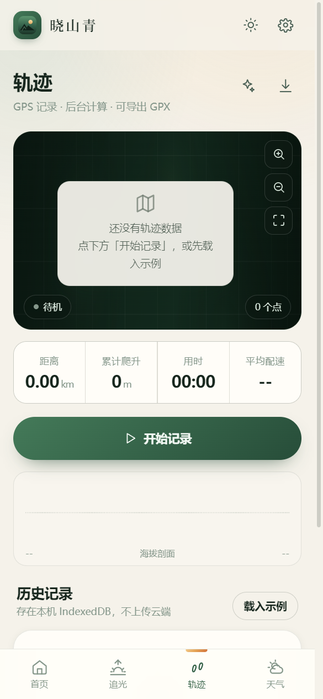

云底高度
LCL ≈ 125 m/℃ × (T − Td)
由气温与露点差反解抬升凝结高度，再叠加云层厚度估出云顶。 云顶低于山顶——你站在云上面；高于山顶——你在云里面，什么都看不见。
户外决策工具 · 深圳
明早哪座山、几点出发、多大几率看到云海——算成一个百分比。算不出来，就直说。
安装包托管在 GitHub Release：支持断点续传，下到一半断了能接着下。国内网络可能偏慢， 也可打开 release 页面手动选包。

首页只做一件事：告诉你今天值不值得上山。
核心主张
天气 App 告诉你「云量 30%」。这个数字对登山的人没有意义——你要知道的是云在不在你脚下。
所以晓山青只输出一个能被证伪的数字：明早 6:12，梧桐山东麓，云海概率 72%。 下面永远跟着一行「基准率 16% · 置信度中」，以及每一项证据的加减值。你可以反驳它， 下次上山回来说一句「看到了」或「白跑一趟」，它会把误差记住。
100 分制是自说自话。百分比能被检验——第二天上山，看到或没看到，答案就写在那儿。 这也是为什么模型里留着「我的反馈样本」：样本越多，它越不敢乱说。
云海不是心情，是物理
模型不算「今天天气多好看」，只算三件事：云底多高、湿度够不够、层结稳不稳。
LCL ≈ 125 m/℃ × (T − Td)
由气温与露点差反解抬升凝结高度，再叠加云层厚度估出云顶。 云顶低于山顶——你站在云上面；高于山顶——你在云里面，什么都看不见。
T − Td ≤ 2 ℃
差得越小，空气越接近饱和。大于 6 ℃ 基本不会有成片的云， 2 ℃ 以内是云海最容易成形的那一档。
夜间辐射降温 + 弱风
晴夜地面散热快，冷空气沉在谷底，暖空气盖在上面——这层盖子把云压住。 风力超过 4 级，盖子就被搅散了。
逆温这一项是估算：真正的判据是 850 hPa 的温湿探空资料，免费天气接口拿不到。 我们用昼夜温差、夜间云量、风力做代理指标，并在界面上标明「置信度」—— 数据不够好时，它会主动告诉你这个概率别太当真。
做减法之后剩下的
不铺十宫格。三个页面，做到底。
把七天的窗口排给你看
云海、日出、星空三种模式，各自一套权重。给出最佳日期、精度到分钟的时刻窗口、 该去哪个坡向、山顶多少度、穿什么。
山上没信号也照常记
距离、爬升、配速全在本地算（Web Worker），地图是自己画的，不依赖任何在线瓦片。 断网、飞行模式、山沟里，一样能记录。
一次上山，一张能发的图
时间、坐标、海拔、当时天气，加上一句写实的叙事，渲染成 1080×1350 的卡片。 事前还能生成「预测卡」，回来看命中没有。
界面
深森林绿与晨曦琥珀，深色浅色都做了。






手机端同一套代码，浏览器打开即可用，也可以「添加到主屏幕」当 App 使。
下载
装完就能看真实预报：不用注册、不用填 Key、不用登录。追光的概率由 925 / 850 hPa 的实测层结算出来， 每一项加减都能展开看到原始数值——算不出来的时候，它会直说算不出来。
标准安装向导，可选安装目录，自动创建桌面与开始菜单快捷方式。适合长期使用。
XiaoShanQing-2.3.0-Setup-x64.exe
打开 Release 页面 · 支持断点续传单文件，双击即用，不写注册表。丢进 U 盘换台电脑也能跑。
XiaoShanQing-2.3.0-Portable-x64.exe
打开 Release 页面 · 支持断点续传不装任何东西，直接开。手机浏览器打开后可以「添加到主屏幕」，用起来和 App 一样，断网也能开。
无需安装 · 打开即用
安卓与 iOS 的原生工程已经建好并同步完毕，但没有预编译的安装包—— 编译需要 Android Studio 与 Xcode（macOS）。如果你要自己出包，仓库里有完整步骤。
不想折腾的话，直接用手机浏览器打开网页版，添加到主屏幕，功能是一致的。
手机浏览器打开关于下载速度：安装包 82 MB，走 GitHub Release，支持断点续传—— 断了重来会接着上次的进度，不会白下。GitHub 在国内时快时慢，慢的时候挂一会儿再回来看， 进度是保住的。
关于「Windows 已保护你的电脑」：安装包没有做代码签名（个人开发者证书一年几千元）， SmartScreen 会拦一次。点「更多信息 → 仍要运行」即可。程序不联网上传任何数据，全部计算在本机。
已知局限
一个预测工具最该做的是交代边界。下面几条都写在 README 里，也写在设置页里。
850 hPa 温湿需要探空资料，免费接口没有。用代理指标替代，界面会标出置信度。
基准率来自华南云海的季节经验，不是标定过的统计模型。样本量还不够。
没有做坡向与山谷的精细建模，所以「哪个坡向」给的是经验建议，不是计算结论。
之前版本的 SOS 功能已下架。没有真实短信网关与卫星通道的求救按钮，比没有更危险。